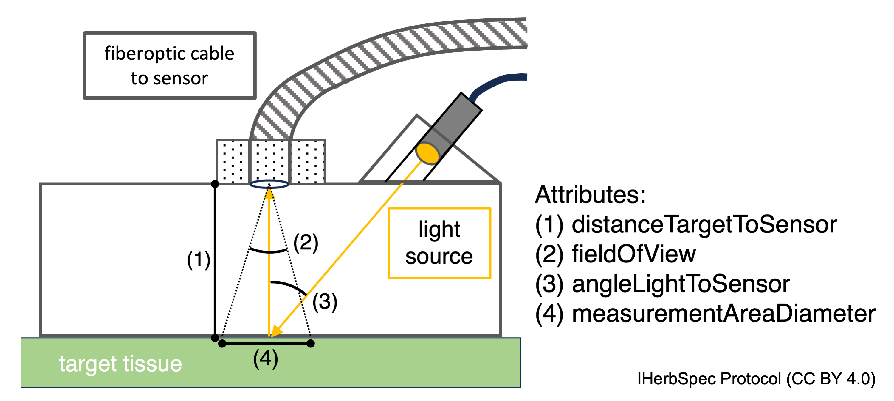

Part 4 – Metadata and Databasing
Overview
This section defines the metadata fields used to describe spectral reflectance measurements of herbarium specimens. This standardization supports interoperability, cross-project data aggregation, and future integration into biodiversity informatics platforms.
Projects can download the IHerbSpec Metadata Spreadsheet (available at doi.org/10.5281/zenodo.18451589) as a foundation for organizing their metadata. This spreadsheet includes all required and optional but recommended fields defined in the tables in Section 4.1. The controlled vocabularies necessary for enumerating certain fields are provided in Section 4.2. Finally, Section 4.3 provides general guidelines for data and metadata storage and dissemination.
While metadata are expected to be disseminated in a flat file format (as in the IHerbSpec Metadata Spreadsheet), fields are presented here in logical groups—project, specimen, and tissue—to support conceptual understanding and integration with local databases.
4.1 Metadata Tables
Table 4.1: Session Metadata
Download Table4.1.csv
Session metadata are those metadata usually associated globally with a continuous digitization project. These metadata can usually be captured once per project and automatically populated for each measurement instance.
| Metadata Field | Filename Code (Table 3.2) | Status | Field Description | Data Type |
|---|---|---|---|---|
projectId |
PI |
Required | Unique identifier for the spectral measurement project. Example: HUHERYspec1. |
TEXT |
sessionId |
SN |
Required | Unique identifier for a measurement session, generated as YYYYMMDDHHMM.Example: 20240617132251. |
TEXT |
instrumentModel |
- | Required | Spectroradiometer model name. Example: SVC HR-1024i. |
TEXT |
opticalSetupDescription |
- | Required | Description of optical probe setup. Example: LC-RP contact probe with leaf clip removed. |
TEXT |
measurementSettings |
- | Required | Instrument settings for measurements. Example: 2 seconds, high light setting. |
TEXT |
whiteReferenceDescription |
- | Required | Material of the white reference. Example: Spectralon SL Standard 99%. |
TEXT |
operator |
- | Optional | Name(s) of person(s) conducting measurements. | TEXT |
lightSourceType |
- | Optional | Light source for optical setup. Example: tungsten halogen. |
TEXT |
distanceTargetToSensor |
- | Optional | Distance (mm) between target tissue and sensor face. Example: 12. |
NUMERIC |
lensFieldOfView |
- | Optional | Angle (degrees) of sensor field of view. Example: 22.5. |
NUMERIC |
angleLightToSensor |
- | Optional | Angle (degrees) of light source to sensor. Example: 10. |
NUMERIC |
measurementAreaDiameter |
- | Optional | Diameter (mm) of illuminated tissue area. Example: 6. |
NUMERIC |

distanceTargetToSensor, fieldOfView, angleLightToSensor, measurementAreaDiameterTable 4.2: Specimen Metadata
Specimen metadata include identifiers and information about the physical specimen, with priority given to required fields needed to link spectral measurements to existing digital records (e.g., specimenId). Optional fields related to taxonomic determination and specimen storage environment are included to support integrative research, quality control, and downstream analysis.
Users should avoid duplicating metadata that are already digitized, maintained, and available in herbarium or institutional platforms, as these sources are better suited for future updates. Instead, users are encouraged to reference those records and supplement only missing required or recommended fields. Due to variation in the metadata recorded on institutional platforms, users should apply caution in the interpretation of presence or absence of determination information or any other recommended but optional fields.
Download Table4.2.csv
| Metadata Field | Filename Code (Table 3.2) | Status | Field Description | Data Type |
|---|---|---|---|---|
herbariumCode |
HC |
Required | Acronym for herbarium or collection (Index Herbariorum code). Examples: GH, P, US-Botany. |
TEXT |
specimenId |
SI |
Required | Identifier for specimen or record (catalog no., barcode, GUID, or collector+number). Examples: 00238762, Thorne24070a. |
TEXT |
scientificName |
- | Optional | Full scientific name at lowest confident rank. Examples: Quercus bicolor, Erythroxylum coca ipadu. |
TEXT |
identificationQualifier |
- | Optional | Uncertainty in taxonomic ID (Darwin Core). Examples: cf., aff. |
TEXT |
identifiedBy |
- | Optional | Person/group who made the identification. Example: T. Plowman. |
TEXT |
dateIdentified |
- | Optional | Date of identification. Examples: 1999, 2004-12-30. |
TEXT |
isTempControlled |
- | Optional | Whether storage has active temperature control. | BOOLEAN |
annualTempMin |
- | Optional | Minimum annual storage temperature (°C). Example: 18. |
TEXT |
annualTempMax |
- | Optional | Maximum annual storage temperature (°C). Example: 26. |
TEXT |
isHumidityControlled |
- | Optional | Whether storage has active humidity control. | BOOLEAN |
annualHumidityMin |
- | Optional | Minimum annual storage relative humidity (%). Example: 20. |
TEXT |
annualHumidityMax |
- | Optional | Maximum annual storage relative humidity (%). Example: 60. |
TEXT |
Table 4.3: Tissue Metadata
Fields describing the type, condition, and position of the tissue measured. Includes required and recommended metadata for linking spectral measurements to individual tissue units. Note that timestamps for tissue measurement files are often captured within the file.
Download Table4.3.csv
| Metadata Field | Filename Code (Table 3.2) | Status | Field Description | Data Type |
|---|---|---|---|---|
backgroundClass |
BG |
Required | Enumerated abbreviated code from Background Class Codes Table 4.7 describing the type of background used behind target tissue. Both abbreviated codes and descriptive codes are accepted. Examples: BGW, BGB, BGP. |
ENUM (Table 4.7) |
hasLowReflectanceBackground |
- | Required | True or False statement that the background (black or paper) has low reflectance as defined as less than 4% reflectance across the spectral range of the instrument. For a paper background, this would be scored false. |
BOOLEAN |
backgroundDescription |
- | Cond. Req. | Description of the black or other background material, including manufacturer and product information when available. Not required for paper backgrounds. Required field when tissue has black or other type (not paper) of background. Example: Musou IR Flock |
TEXT |
targetClass |
TC |
Required | Free text or enumerated code from Target Class Codes (Table 4.5) describing type of tissue or background being measured. Both abbreviated codes and full codes can be used. Examples: AD, perigynium. |
TEXT or ENUM (Table 4.5) |
targetTissueId |
TN |
Optional | Character index tracking the measured tissue units when multiple tissues are measured from a single specimen (e.g., loose1, 1, 2). For compound or more complex structures, projects are encouraged to develop their own consistent naming convention.Examples: loose1, leaflet1, petal1. |
TEXT |
tissueDevelopmentalStage |
- | Required | Tissue developmental stage as coded in Developmental Stage Class Codes Table 4.4. Examples: Mature, Uncertain. |
ENUM (Table 4.4) |
hasBackgroundInMeasurement |
- | Required | True or false values indicating that the target tissue does not cover the full measurement area and the background is part of the measurement. | BOOLEAN |
percentBackgroundInMeasurement |
- | Optional | Numeric estimate for the percentage of the measurement area that is not covered by the target tissue and is background material (black background or herbarium paper). It is recommended to describe the estimation method in the comment field. Example: 25. |
INTEGER |
hasGlue |
- | Required | true/false/uncertain: glue present in measurement area. | ENUM (true/false/ uncertain) |
hasNonGlueContamination |
- | Required | True, false, or uncertain values indicating a contaminant other than glue is present in the measurement area. This includes foreign biotic or abiotic agents on the target tissue, such as fungus or preservatives. | ENUM (true/false/ uncertain) |
measurementFlags |
- | Optional | Standardized categorical descriptors of the condition of the tissue within the measurement area. Values are selected from the predefined Tissue Descriptor Codes Table 4.6. Multiple descriptors should be separated with a pipe character (|).Example: GoodPreservation|PathogenPresent. |
ENUM (Table 4.6) |
tissueNotes |
- | Optional | Free-text field used to record additional observations on the condition of the specimen that may aid interpretation of spectral data. It can be used to clarify or elaborate on descriptors already included in measurementFlags, such as the conditions evidencing the quality of preservation (e.g., a MediumPreservation flag could be explained with the note, ‘measurement area discolored and wrinkled’). Notes should specify whether the information applies to the measurement area, the tissue unit, or the specimen as a whole. Examples: mold in measurement area, formaldehyde preserved. |
TEXT |
tissueLocation |
- | Optional | The location of the target tissue on the herbarium sheet. For mounted tissues, record as an X,Y coordinate in centimeters, with 0,0 at the top-left corner of the sheet (e.g., 17,29; see Fig. 4.2). If the sheet has non-square angles, align it flush with the left-side ruler. For unmounted tissues, provide a descriptive note indicating location.Examples: 17,29, envelope TCAD_TN1. |
TEXT (coordinates preferred) |
comment |
- | Optional | Free-text field for recording any additional notes relevant to the measurement, including observations about the instrument, session, specimen, tissue, or data quality that are not captured elsewhere in the metadata. Example: Amazing specimen. |
TEXT |
measurementIndex |
IDX |
Required | The measurement number index appended to the base filename (Part 3, Table 3.2: IDX) to properly associate each row of metadata with its single, corresponding measurement file. Example: 0001. |
TEXT |

tissueLocation in Table 4.3: Tissue Metadata. Herbarium sheet is placed on top of the benchtop black background with centimeter rulers at top and left sides for ‘x,y’ notation of measurement area (white dashed circles) in centimeters with 0,0 at the top left. Black background cards are placed under unglued portions of leaves. From left to right, tissue TCAB_TN3 has the location 10,26, tissue TCAD_TN2 has location 17,16 and tissue TCAD_TN1 is stored with a label in a glassine envelope inside the packet with location envelope TCAD_TN1. For reference, specimen NEBC_00651639 metadata fields are proposed in Appendix II. Specimen courtesy of the New England Botanical Society.4.2 Controlled Vocabularies
Table 4.4: Developmental Stage Class Codes
Available codes for enumerating the required tissueDevelopmentalStage metadata Table 4.3. Codes follow ‘CamelCase’ format with capitalized initial letters.
Download Table4.4.csv
| Code | Description |
|---|---|
Young |
Actively developing tissue that is not yet fully expanded; may appear thinner, lighter in color, or more pliable than mature tissue. |
Mature |
Fully developed and expanded tissue showing typical structural and color characteristics for the taxon; not visibly senescent. |
Old |
Senescent tissue showing visible signs of aging or decline, such as yellowing, darkening, curling, or drying. |
Uncertain |
The development stage has been assessed but cannot be confidently determined due to intermediate features, damage, or insufficient visual cues. |
NotScored |
Developmental stage was not assessed or recorded for this tissue. |
Table 4.5: Target Class Codes.
Available codes for enumerating the required targetClass metadata Table 4.3. Either the abbreviated code or the full CamelCase-formatted code (with an initial capital letter) may be used.
Download Table4.5.csv
| Code | Full code | Description |
|---|---|---|
W |
WhiteReference |
White reference. |
WC |
WhiteCalibratedReference |
White calibrated reflectance standard (see Section 5.3). |
B |
BlackBackground |
Black background material, recorded when used as background for other target tissue measurements. |
BC |
BlackCalibratedReference |
Black calibrated reflectance standard (see Section 5.3). |
P |
Paper |
Herbarium sheet paper, recorded when used as background for other target tissue measurements. |
AB |
LeafAbaxial |
Abaxial leaf surface. |
AD |
LeafAdaxial |
Adaxial leaf surface. |
LF |
Leaf |
Leaf surface. Applied when the abaxial and adaxial side cannot be differentiated or when leaves are terete or otherwise not bifacial (e.g. Curio rowleyanus). |
PT |
Petal |
Petal. |
IF |
Inflorescence |
Inflorescence. |
BR |
Bract |
Bract. |
FR |
Fruit |
Fruit. The specific tissue (e.g., exocarp, mesocarp) can be described in tissueNotes. |
PSS |
Photosynthetic-SucculentStem |
Photosynthetic stem as in succulents like Cactus. |
OB |
OuterBark |
Outer bark, rhytidome. Woody branch outer bark as in Hadlich et al. (2018). |
IB |
InnerBark |
Phloem. Woody branch inner bark as in Hadlich et al. (2018). |
HS |
HerbaceousStem |
Herbaceous stem; can be photosynthetic as in PSS. |
WD |
Wood |
Wood. |
Table 4.6: Tissue Descriptor Codes
Download Table4.6.csv
| Code | Description |
|---|---|
GoodPreservation |
Tissue in the measurement area appears well preserved in color, structure, and texture (including original features from disease or herbivory) and shows minimal signs of degradation or breakage from pressing, drying, or storage. Tissues that are simply discolored may still be considered well preserved if other aspects of integrity are maintained. |
MediumPreservation |
Tissue in the measurement area shows moderate degradation, such as partial discoloration, wilting, or deformation. Some structural loss may be present, though not severe. Evidence of degradation from other parts of the specimen (e.g., mold elsewhere on the tissue) may support assigning this level of preservation, but such observations should be recorded in tissueNotes if not present within the measurement area. This is expected to be the most common preservation condition for herbarium specimens used in spectral measurement. |
PoorPreservation |
Tissue in the measurement area shows clear signs of degradation, including severe discoloration, wrinkling, deformation, or breakage. Mold, insect damage, or other signs of poor preservation may also be present. As with other flags, evidence of degradation outside the measurement area (e.g., mold elsewhere on the tissue) may support the assigned flag but should be recorded in tissueNotes if not directly observed in the measurement area. Note that natural discoloration tendencies of certain taxa should be considered when applying this flag (see Appendix II). |
MidveinPresent |
Target measurement area contains midvein or similarly prominent secondary venation. |
OrganismPresent |
Indicates that a visible organism (e.g., bryophyte, lichen, fungal structure) is present on or within the measurement area. This includes epiphyllous, endophytic, or other leaf-associated organisms, regardless of their ecological role (e.g., mutualistic, parasitic, or incidental). This flag serves as a general indicator and can be used in conjunction with more specific organism flags below. |
BryophytePresent |
Indicates that a visible bryophyte (e.g., moss, liverwort, or hornwort) is present on or within the measurement area. |
LichenPresent |
Indicates that a visible lichen thallus or fragment is present on or within the measurement area. |
FungusPresent |
Indicates that fungal structures are visible in the measurement area (e.g., hyphae, mycelium, fruiting body) and are presumed to be pre-mortem associates, such as endophytes or pathogens active while the plant was alive. This flag can overlap with PathogenPresent or MoldPresent. |
PathogenPresent |
Target measurement area contains necrotic tissue or other signs of pathogenic infection. Can be used with FungusPresent when fungal pathogens are suspected or known. This flag is based on visible tissue symptoms, not molecular confirmation. |
MoldPresent |
Indicates that the measurement area shows signs of post-mortem fungal growth (e.g., surface mold, fuzz, bloom), likely resulting from poor drying or storage conditions. In practice, mold may be difficult to distinguish from other fungal growth without microscopic or culture analysis. Use judgment and note uncertainty in tissueNotes if needed. |
HerbivoryPresent |
Target measurement area contains herbivory. |
AlcoholPresent |
Target measurement area was preserved with ethanol or other alcohol. |
PreservativePresent |
Target measurement area contains chemical preservative contamination excluding alcohol preservatives (e.g., diatoms, formaldehyde). |
BurnPresent |
Target measurement area contains burned tissue. |
DebrisPresent |
Target measurement area contains non-specific material not described in other codes (e.g., dust, soil particles, insect parts, fibers, etc.) that may interfere with clean measurements. Can be elaborated in the tissueNotes field. |
Table 4.7: Background and White Reference Class Codes
Available codes for enumerating the required tissueBackgroundClass metadata Table 4.3. Either the abbreviated code or the full CamelCase with initial capital letter jformatted code may be used.
Download Table4.7.csv
| Code | Full code | Description |
|---|---|---|
W |
WhiteReference |
White reference. |
B |
BlackBackground |
Black background (<4% reflectance). |
P |
PaperBackground |
Herbarium sheet paper. |
O |
OtherBackground |
Other background material (must be described in metadata). |
4.3 Guidelines for Data Archiving and Sharing
For each specimen, a copy of all unprocessed spectral files and associated metadata should be archived by the herbarium or institution that owns the specimen, or otherwise managed in accordance with institutional data storage practices. Wherever possible, these data should remain co-located with specimen records or stored in infrastructure (e.g., institutional servers, cloud services, or collection management systems) that supports long-term stewardship, identifier stability, and integration with specimen metadata.
In addition to institutional archiving, projects are strongly encouraged to deposit unprocessed spectral data files and metadata in a persistent, open-access repository that issues DOIs and supports versioning.
The IHerbSpec Dataverse (https://dataverse.harvard.edu/dataverse/iherbspec/) is a community-curated, thematic repository designed specifically to serve herbarium spectral data and metadata. It provides free access, dataset-level versioning, rich metadata support, and curation aligned with the IHerbSpec Protocol. Datasets deposited in the IHerbSpec Dataverse can be linked to specimen records in primary digitization platforms (e.g., Symbiota, Specify, Tropicos) using stable identifiers and resource relationships, enabling integration across systems while allowing spectral data to be managed in infrastructure optimized for these data types.The IHerbSpec Dataverse supports a project-based data sharing model, suitable for laboratory studies, collaborative research projects, and digitization efforts that span multiple collections. Datasets may include raw spectra, metadata spreadsheets, README documentation, processed spectra, and associated trait data. Metadata are reviewed prior to release to promote compliance with the IHerbSpec Protocol and to facilitate interoperability and reuse.
To enhance discoverability and specimen-level integration, datasets archived in external repositories (including the IHerbSpec Dataverse) may be linked to specimen records using standardized associations (e.g., Darwin Core Resource Relationship terms such as
isReferencedBy). These links can be prepared in bulk and ingested by specimen portals, allowing users to search for specimens associated with spectral data while the files themselves remain hosted in the most appropriate repository.To facilitate reuse and analysis, projects may also share tabular data files (e.g.,
.csv) containing samples in rows and spectral bands and metadata fields in columns. If processed spectra are included (e.g., interpolated, splice-corrected, continuum-removed), all applied processing steps should be clearly documented.When projects include additional trait data alongside spectral measurements, contributors should ensure that trait definitions, units, and measurement methods are clearly documented and standardized where possible. Ongoing community efforts will be required to align spectral data with broader trait data standards and repositories.
Contributors should consider data governance needs, including sensitive specimen information, traditional knowledge considerations, access restrictions, and long-term curation responsibilities. The IHerbSpec community is actively developing governance, curation, and review practices to support responsible data sharing consistent with FAIR and CARE principles.
The IHerbSpec community is also working toward the development of software tools to automatically validate metadata, filenames, and dataset structure against the IHerbSpec Protocol during data submission, and to enable future parsing of bulk datasets into specimen-specific subsets for downstream integration and reuse.
See an example of spectral data and metadata sharing here:
https://doi.org/10.7910/DVN/LXPHBC —
 IHerbSpec Protocol (
IHerbSpec Protocol (